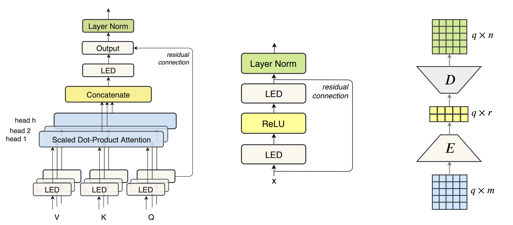

More about AutoFact
AutoFact transforms your transformers into a low rank transformers.
On top of that, AutoFact also factorize most of your other deep learning architecture, the same way.
Low-Rank Transformer Unit

Left: Low-Rank Multi-head Attention (LRMHA), Center: Low-Rank Feed-forward
(LRFF), and Right: Linear Encoder-Decoder (LED).
The Transformer model architecture

Low-Rank Transformer Architecture

The Transformer model architecture introduced by Vaswani et al.
Similar Transformer model architecture with low-rank multi-head atttentions and low-rank feed-forward components
Find out more in:
Cahyawijaya, S.; Winata, G. I.; Lovenia, H.; Wilie, B. I.; Dai, W.; Ishii, E.; and Fung, P. 2022. AutoFact: Factorization Library for More Efficient Deep Learning Models. In 36th AAAI Conference on Artificial Intelligence (Demo Track), AAAI 2022, Vancouver, Canada, Feb 22 March 1, 2020, 6144–6148. IEEE.
Winata, G. I.; Cahyawijaya, S.; Lin, Z.; Liu, Z.; and Fung, P. 2020. Lightweight and Efficient End-To-End Speech Recognition Using Low-Rank Transformer. In 2020 IEEE Inter-national Conference on Acoustics, Speech and Signal Processing, ICASSP 2020, Barcelona, Spain, May 4-8, 2020,6144–6148. IEEE.